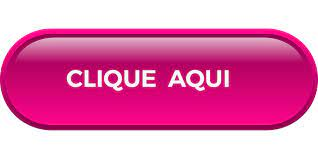

Outubro Rosa é uma campanha mundial que tem como objetivo promover a conscientização sobre o câncer de mama e a importância do diagnóstico precoce. Durante todo o mês de outubro, diversas ações são realizadas para informar e educar a população sobre a doença, que afeta milhões de mulheres em todo o mundo.
O simbolismo da campanha é representado pela cor rosa, que se tornou um ícone de luta e esperança. Durante esse período, muitas instituições de saúde, empresas e organizações não governamentais promovem eventos, palestras e atividades de sensibilização. A mamografia e o autoexame das mamas são enfatizados como ferramentas essenciais para a detecção precoce, aumentando as chances de tratamento bem-sucedido.
Além disso, Outubro Rosa também busca desmistificar tabus e preconceitos relacionados ao câncer, encorajando as mulheres a cuidarem de sua saúde e a compartilharem suas experiências. A solidariedade e o apoio mútuo são fundamentais para enfrentar essa batalha.
Participar do Outubro Rosa é um ato de empoderamento e solidariedade, lembrando que a informação e a prevenção são as melhores armas contra o câncer de mama. Vamos nos unir nessa causa e cuidar da saúde!